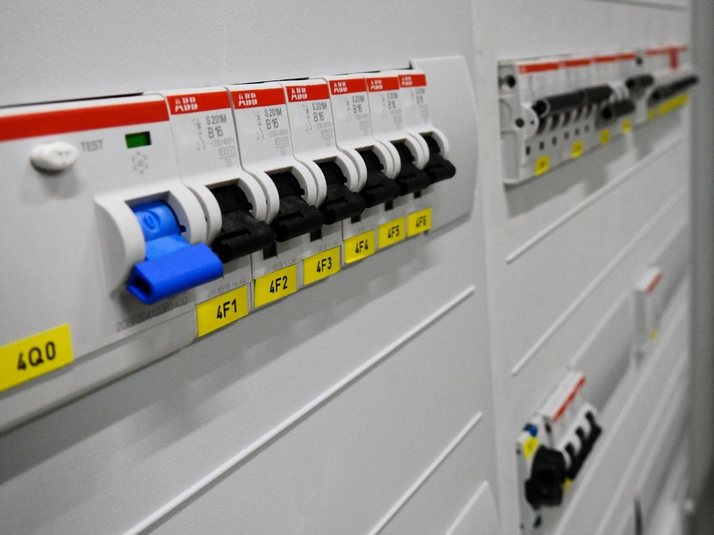

🔌 Circuit breaker

🔥 O problema
Sistemas falham! E devemos estar preparados pra quando isto ocorrer.
Se tudo foi implementado até o momento (incluindo os desafios), nós temos integrações com dois sistemas distintos. E se um deles falhar? ou ambos? Vamos parar todo o nosso sistema por conta disto?
E como saber se não é apenas uma instabilidade? E se é uma falha de rede?
Você talvez já tenha ouvido falar em retentativas em cenários de integração, mas essas retentativas podem degradar ainda mais o sistema ao qual estamos integrando.
🙀 E agora? O que podemos fazer?
E se puxássemos o plug que liga nosso sistema ao sistema externo temporariamente?
O que vamos falar aqui se aplica a integrações com sistemas de terceiros ou sistemas distribuídos internos.
🔌 Circuit breaker
A tradução seria, "disjuntor", e seu papel na eletrônica é abrir o circuito que apresenta falha evitando uma sobrecarga de seus componentes. Esse termo também é utilizado na bolsa de valores para quando há uma grande instabilidade (uma forte queda por exemplo), assim a bolsa de valores interrompe as negociações temporariamente, evitando maiores perdas nesses momentos.
Notaram uma semelhança na utilização do conceito? Temos uma falha e uma "abertura" do circuito para evitar maiores danos.
Assim funciona o circuit breaker na computação. Quando falamos em abrir um circuito, estamos falando na verdade em interromper a comunicação entre sistemas (temporariamente).
Nygard em seu livro Release It explica bem o circuit breaker.
Quote
[...] circuit breakers protect overeager gadget hounds from burning their houses down. The principle is the same: detect excess usage, fail first, and open the circuit. More abstractly, the circuit breaker exists to allow one subsystem (an electrical circuit) to fail (excessive current draw, possibly from a short circuit) without destroying the entire system (the house). Furthermore, once the danger has passed, the circuit breaker can be reset to restore full function to the system.
Nosso sistema tem os seguintes estados:
Estado fechado: é o estado onde tudo está funcionando normalmente e as requisições serão feitas normalmente. Quando alguma condição de falha é detectada, o circuito é aberto.
Estado aberto: é o estado onde o circuito está aberto e as requisições não serão executadas. Um erro será retornado ou uma informação presente em cache.
Estado semi aberto: é o estado posterior ao estado aberto. Um teste é feito para verificar a condição atual do circuito, se uma falha ocorrer, o estado será alternado para aberto novamente, mas se for bem-sucedido, ele volta para o estado fechado.
🧑🏫 Demonstração e Solução
Vamos fazer uma simulação utilizando código para visualisar melhor este cenário.
Crie um arquivo de exemplo como visto abaixo e execute-o para ver na prática o que estamos falando.
Para executa-lo utilize: python exemplo_circuito_breaker.py
import asyncio
import httpx
async def recupera_produto(codigo):
print(f"Recuperando produto de código {codigo}")
try:
async with httpx.AsyncClient() as cliente:
resposta = await cliente.get(f"http://localhost:8000/catalogs/{codigo}")
resposta.raise_for_status()
print(resposta.json())
except httpx.HTTPStatusError as e:
print(f"Erro ao recuperar produto de código {codigo}: {e}")
async def main():
codigo_produtos = ["155568600", "jj2a97g940", "cb9a1801k9", "224722100", "702915400"] * 20
await asyncio.gather(
*(recupera_produto(codigo) for codigo in codigo_produtos),
)
asyncio.run(main())
Warning
Como as APIs abertas do Magalu se encontram em alpha, uma autorização prévia é necessária. Por isso, você pode utilizar uma versão simulada da mesma.
As instruções de instalação e execução se encontram no readme do projeto.
Este código simula o que chamamos de estado de circuito fechado, as chamadas a api externa estão sendo feitas e respondendo normalmente.
Agora vamos introduzir um pouco de caos e ver o que acontece.
Se estiver acompanhando o tutorial posteriormente, modifique a variável de ambiente FAIL_RATE para 70 (valor expresso em porcentagem) e execute o código da api simulada novamente.
Rode novamente nosso código (talvez seja necessário rodar algumas vezes) e veja o que acontece: python exemplo_circuito_breaker.py.
Repare que agora um número menor de pedidos são retornados com sucesso e falhas ocorrem de forma intermitente.
Por algum motivo qualquer, algumas chamadas a api externa respondem com erro. Isto pode significar um problema de rede, uma falha na api externa, sobrecarga de requisições na api externa, etc.
Precisamos dar um tempo para ver se o sistema que estamos interagindo se recupera.
Vamos introduzir então um circuit breaker para modificarmos nosso sistema para um estado aberto.
O luizalabs desenvolveu e mantém como projeto open source o lasier, uma implementação de circuit breaker com suporte a processos síncronos e assíncronos.
Para não precisarmos adicionar maior complexidade ao exemplo utilizaremos um cache em memória para guardar as informações do nosso circuito (como número de requisições que falharam). Esse cache em memória será feito utilizando a biblioteca aiocache.
Primeiro passo é instalar as duas bibliotecas que serão necessárias:
Lasier:
poetry add lasier
Aiocache:
poetry add aiocache
Próximo passo é definir uma regra de quando vamos abrir o circuito:
# ...
from lasier.circuit_breaker.rules import PercentageFailuresRule
rule = PercentageFailuresRule(
# Numero escolhido para facilitar
# a visualização da solução do problema
max_failures_percentage=30,
failure_cache_key='my_cb',
min_accepted_requests=10,
request_cache_key='my_cb_request'
)
# ...
Essa configuração pode ser feita baseada também em número de requisições com falha.
Além da regra de abertura do circuito, vamos definir um cache para armazenar as informações do circuito e das requisições que falharam.
# ...
from aiocache import Cache
from lasier.adapters.caches import AiocacheAdapter
# ...
cache = AiocacheAdapter(Cache(Cache.MEMORY))
E agora vamos definir o circuito:
import asyncio
import httpx
from aiocache import Cache
from lasier.adapters.caches import AiocacheAdapter
from lasier.circuit_breaker.asyncio import CircuitBreaker
from lasier.circuit_breaker.rules import PercentageFailuresRule
rule = PercentageFailuresRule(
# Numero escolhido para facilitar
# a visualização da solução do problema
max_failures_percentage=50,
failure_cache_key="my_cb",
min_accepted_requests=10,
request_cache_key="my_cb_request",
)
cache = AiocacheAdapter(Cache(Cache.MEMORY))
class OpenCircuitError(Exception):
pass
def with_circuit_breaker(func):
async def wrapper(*args, **kwargs):
try:
async with CircuitBreaker(
rule,
cache,
failure_exception=OpenCircuitError,
catch_exceptions=(httpx.HTTPStatusError,),
):
return await func(*args, **kwargs)
except OpenCircuitError:
# aqui poderia vir um tratamento para
# quando o circuito está aberto como:
# - enviar um email para o time
# - reagendar a execução da função
# - recuperar o valor armazenado em cache
print("O circuito está aberto, alguma ação pode ser tomada.")
return wrapper
@with_circuit_breaker
async def recupera_produto(codigo):
print(f"Recuperando produto de código {codigo}")
async with httpx.AsyncClient() as cliente:
resposta = await cliente.get(f"http://localhost:8000/catalogs/{codigo}")
resposta.raise_for_status()
print(resposta.json())
async def main():
codigo_produtos = ["155568600", "jj2a97g940", "cb9a1801k9", "224722100", "702915400"] * 20
await asyncio.gather(
*(recupera_produto(codigo) for codigo in codigo_produtos),
)
asyncio.run(main())
Eu decidi criar um decorador para introduzir o circuit breaker. Ao perceber que o circuito está aberto, ele não executa a função, mas sim retorna um erro alertando sobre a abertura do circuito e uma ação pode ser tomada.
💁 Você deve estar se perguntando: "E como funciona o estado semi aberto?". Infelizmente isto ainda não foi implementado e por padrão o circuito será fechado em 60 segundos, ou outro valor configurado. Mas como é um projeto de código aberto, convido vocês a contribuirem e implementarem esta funcionalidade.
⌨️ Modificando nossa API
Que tal adicionar circuit breaker em nosso sistema?
🗣️ Quais seriam os pontos onde deveríamos adicionar o circuit breaker? Em caso de falha o que faremos, retornaremos o valor em cache? Vamos adicionar algum recurso para isto como o Redis?
Será que esta técnica é mesmo necessária no nosso projeto?
Reflita sobre estes questionamentos.
Estas discussões são importantes e todas elas têm um "trade off", ou seja, podem ter algum custo.
💾 Salvando a versão atual do código
Caso decida modificar o seu código para utilizar circuit breaker, como estamos adicionando novas bibliotecas ao nosso projeto e possivelmente mais código também, vamos salvar a versão atual do código.
Adicione os arquivos que foram modificados com o comando git add e em seguida consolide a nova versão com o comando git commit -m "Adicionando circuit breaker".
Não esqueça de enviar as alterações para o servidor remoto com o comando git push.
Nesse ponto temos uma API que melhoramos o tempo de resposta e aumentamos a robustez. Só isto é suficiente? Na verdade temos várias outras técnicas que podemos usar para melhorar a nossa API.
😊 Olha tudo que fizemos até agora!🎈 Vamos continuar?
🐂 Uma api robusta deve estar preparada para lidar com falhas.